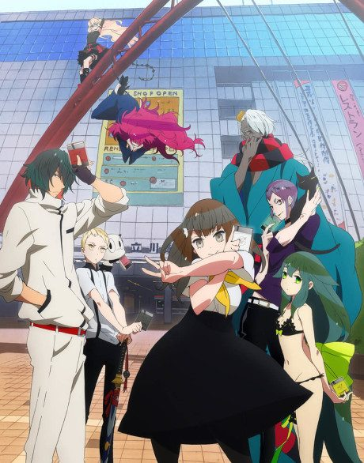

Gatchaman Crowds
ガッチャマン クラウズ
An original anime, so there's no book to continue with.
7.0AniList score
—Animeter, no votes yet
25episodes, 3 seasons
3 seasons, 25 episodes
In airing order. Episode numbers on this site count straight through every season, so season 2 starts at episode 13.
1
2013 · TV
Gatchaman Crowds
Episodes1–1212 ep
2
2015 · Web
Gatchaman Crowds insight: Inbound
Episodes13–131 ep
3
2015 · TV
Gatchaman Crowds insight
Episodes14–2512 ep
Sources: AniList